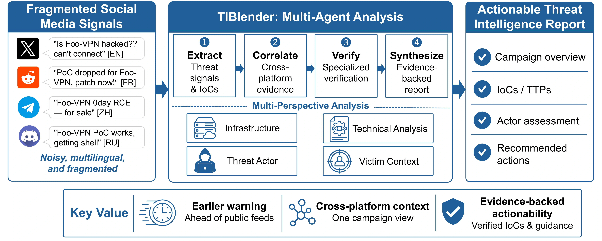
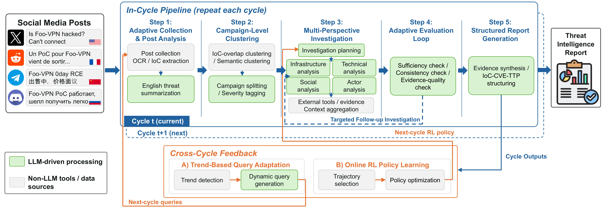
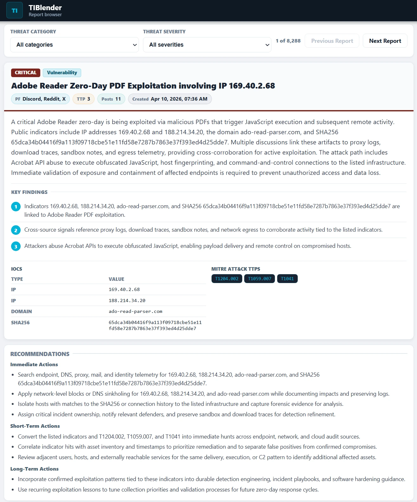

TIBlender
Early-Warning Threat Intelligence from Cross-Platform Social Media Evidence
1 NTT Security Holdings Corporation & NTT, Inc. 2 Tokyo Metropolitan University
Accepted at the 42nd Annual Computer Security Applications Conference (ACSAC 2026).
Overview
Threat-relevant information is distributed across social media platforms, often in different languages and with incomplete context. TIBlender brings these signals together to generate structured, evidence-backed threat intelligence reports.
The system monitors X, Reddit, Telegram, and Discord. Specialized LLM agents correlate posts into campaigns, investigate threats from multiple perspectives, and validate supporting evidence before producing actionable indicators of compromise (IoCs) and reports. The system also adapts collection queries and investigation policies across successive monitoring cycles.

System design
TIBlender uses a five-step processing pipeline within each collection cycle. Evidence is gathered from four complementary perspectives—Infrastructure, Technical, Social, and Actor—and reviewed by independent judge agents.

- 1. Adaptive Collection and Post AnalysisCollect posts, extract IoCs, and normalize multilingual content into English threat summaries.
- 2. Campaign-Level ClusteringGroup related posts using IoC overlap and semantic similarity, followed by campaign-level refinement.
- 3. Multi-Perspective InvestigationInvestigate infrastructure, technical details, social context, and threat actors using external evidence.
- 4. Adaptive Evaluation LoopAssess evidence sufficiency, consistency, and quality; request additional investigation when needed.
- 5. Structured Report GenerationGenerate reports with supporting evidence, IoCs, CVEs, and TTPs in operational formats.
Cross-cycle feedback. Trend-based query adaptation updates the next collection cycle, while online reinforcement learning updates the investigation strategy using selected trajectories.
Evaluation
The paper evaluates TIBlender over a 31-day deployment (March 16–April 16, 2026) spanning all four monitored platforms. Its experiments examine cross-platform contributions, same-input IoC extraction baselines, public threat feeds, human validation, and component ablations.
| Collected social media posts | 873,973 |
|---|---|
| Generated threat intelligence reports | 8,288 |
| Reports integrating multiple platforms | 2,003 (24.2%) |
| IoCs absent from each evaluated public feed (feed-scoped) | 83.0%–99.6% |
| Maximum lead time before CISA KEV listing | 13.4 days |
Example threat intelligence report
The paper presents a report concerning in-the-wild exploitation of an Adobe Reader zero-day (later assigned CVE-2026-34621). Information from X, Discord, and Reddit contributes different pieces of the investigation, including exploitation alerts, technical context, and the attack timeline.
Reports include a threat summary, supporting evidence, confidence information, relevant IoCs and TTPs, and recommended actions. A browser-based report viewer is illustrated in the paper.
The screenshot is illustrative; access to report files and other research artifacts will be updated in the release section below.

Research artifacts
The implementation and research dataset are being prepared for release on GitHub. Links to the materials and documentation will be added here once available.
The publicly available arXiv preprint of the TIBlender paper.
System source code and setup documentation for the collection, clustering, investigation, evaluation, and report-generation pipeline.
Research data and associated descriptions for evaluating TIBlender, subject to privacy review and social media platform data-sharing requirements.
Paper and citation
Hiroki Nakano, Takashi Koide, and Daiki Chiba. “TIBlender: Early-Warning Threat Intelligence from Cross-Platform Social Media Evidence.” In Proceedings of the 42nd Annual Computer Security Applications Conference (ACSAC 2026), Los Angeles, California, USA, 2026.
@inproceedings{nakano2026tiblender,
author = {Hiroki Nakano and Takashi Koide and Daiki Chiba},
title = {{TIBlender}: Early-Warning Threat Intelligence from
Cross-Platform Social Media Evidence},
booktitle = {Proceedings of the 42nd Annual Computer Security
Applications Conference (ACSAC 2026)},
year = {2026}
}
For questions about this project, contact Hiroki Nakano.